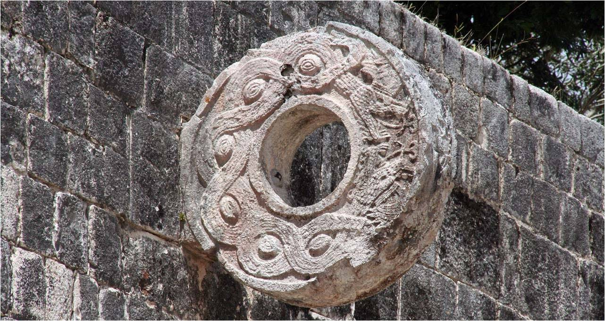
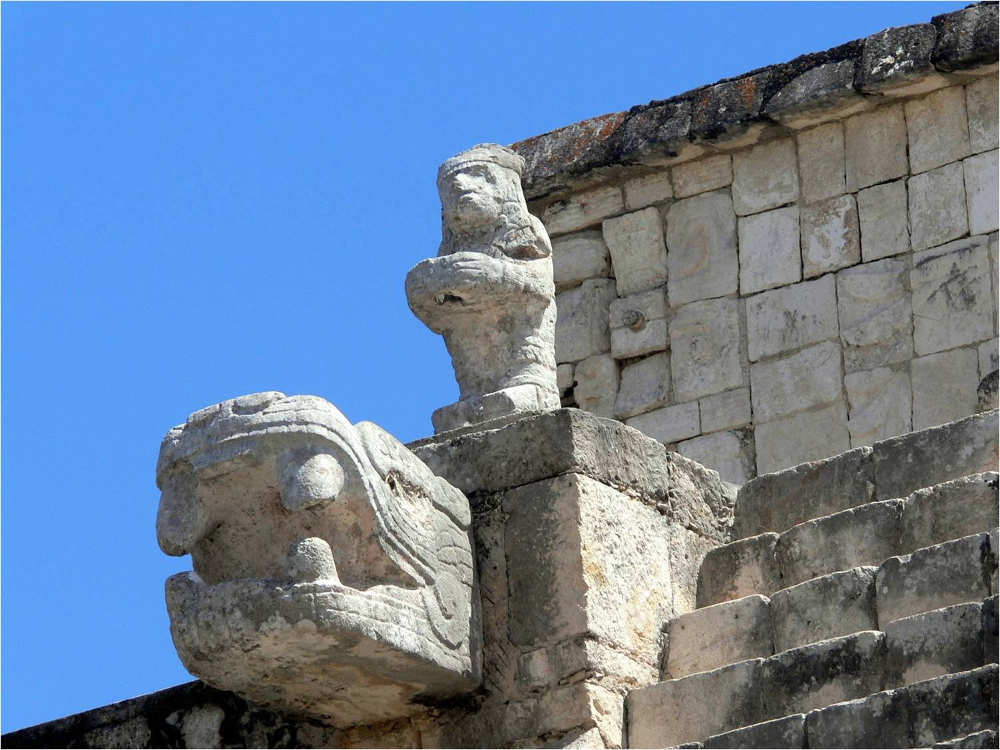
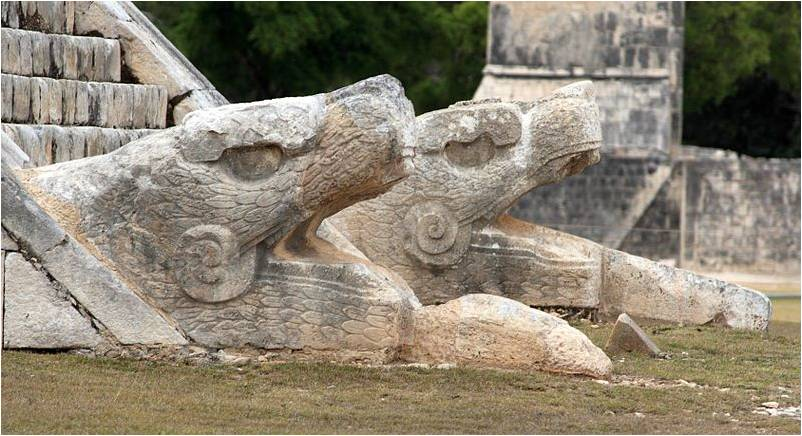
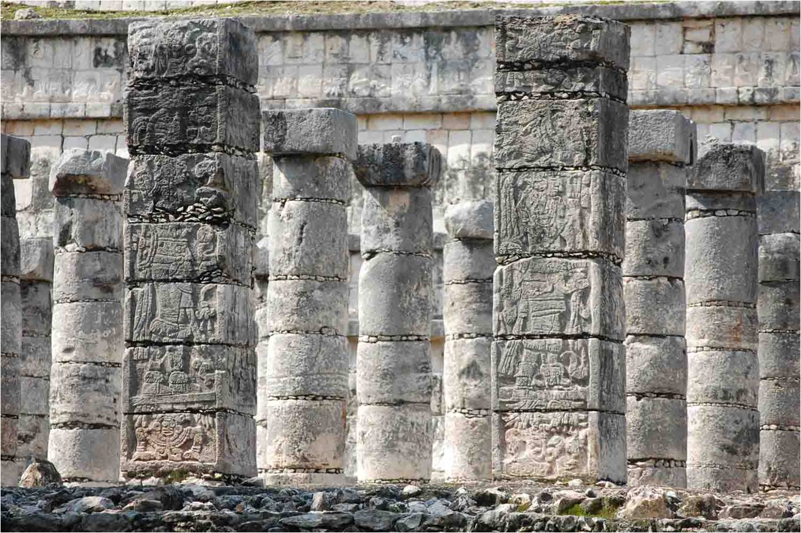
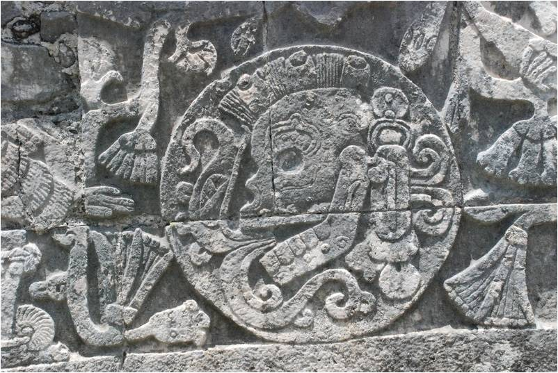
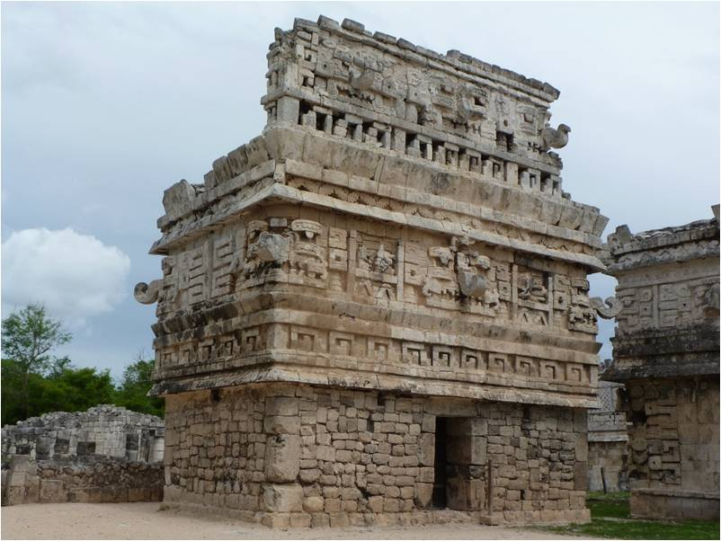

Galería de imágenes
Un rincón en el que puedes encontrar datos interesantes relacionados con ésta disciplina


En 1988, la UNESCO designó a Chichén Itzá Patrimonio Cultural de la Humanidad. En 2007 se convirtió en una de las 7 Nuevas Maravillas del Mundo, de acuerdo con una votación internacional organizada por la empresa privada New World Corporation, y en la que participaron más de cien millones de personas.

Juego de Pelota

Detalle de Arquitectura

Serpientes del Templo principal

Relieves en columnas

Juego de Pelota, relieve
